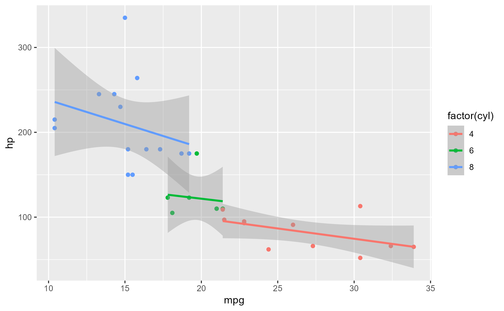
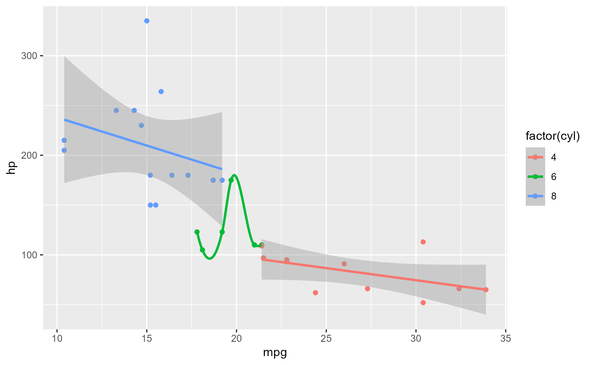
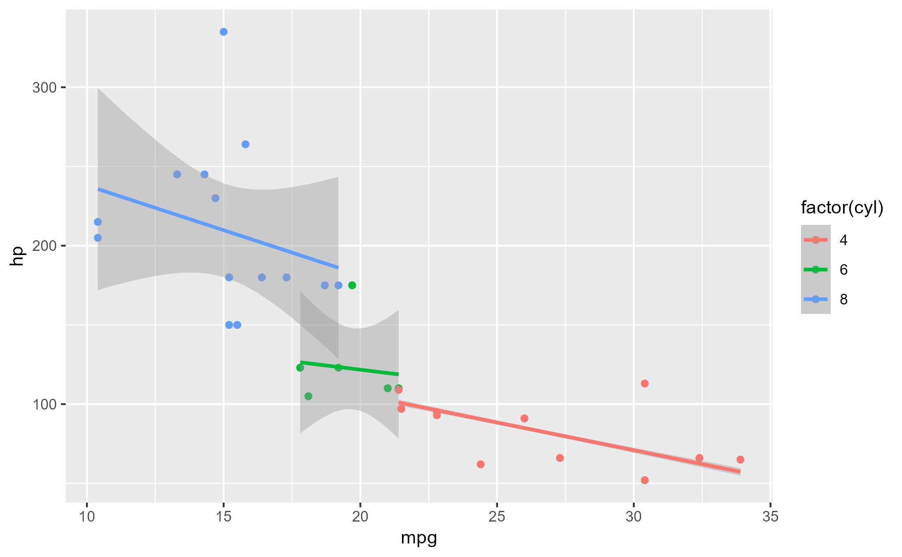

Highjack a method's execution and modify its argument values
Source:R/workflows-highjack.R, R/aliases.R
ggtrace_highjack_args.RdHighjack a method's execution and modify its argument values
Usage
ggtrace_highjack_args(x, method, cond = 1L, values, ..., draw = TRUE)
highjack_args(x, method, cond = 1L, values, ..., draw = TRUE)Arguments
- x
A ggplot object
- method
A function or a ggproto method. The ggproto method may be specified using any of the following forms:
ggproto$methodnamespace::ggproto$methodnamespace:::ggproto$method
- cond
When the return value should be replaced. Defaults to
1L.- values
A named list of variable-value pairings. When values are expressions, they are evaluated in the formals.
- ...
Unused.
- draw
Whether to draw the modified graphical output from evaluating
x. Defaults toTRUE.
Tracing context
When quoted expressions are passed to the cond or value argument of
workflow functions they are evaluated in a special environment which
we call the "tracing context".
The tracing context is "data-masked" (see rlang::eval_tidy()), and exposes
an internal variable called ._counter_ which increments every time a
function/method has been called by the ggplot object supplied to the x
argument of workflow functions. For example, cond = quote(._counter_ == 1L)
is evaluated as TRUE when the method is called for the first time. The
cond argument also supports numeric shorthands like cond = 1L which evaluates to
quote(._counter_ == 1L), and this is the default value of cond for
all workflow functions that only return one value (e.g., ggtrace_capture_fn()).
It is recommended to consult the output of ggtrace_inspect_n() and
ggtrace_inspect_which() to construct expressions that condition on ._counter_.
For highjack functions like ggtrace_highjack_return(), the value about to
be returned by the function/method can be accessed with returnValue() in the
value argument. By default, value is set to quote(returnValue()) which
simply evaluates to the return value, but directly computing on returnValue() to
derive a different return value for the function/method is also possible.
Examples
set.seed(1116)
library(ggplot2)
library(dplyr)
p <- ggplot(mtcars, aes(mpg, hp, color = factor(cyl))) +
geom_point() +
geom_smooth(method = "lm")
p
#> `geom_smooth()` using formula = 'y ~ x'

# Fit predictions from loess regression just for second group
ggtrace_highjack_args(
x = p,
method = StatSmooth$compute_group,
cond = quote(data$group[1] == 2),
values = list(method = "loess")
)
#> `geom_smooth()` using formula = 'y ~ x'

# If value is an expression, it's evaluated in the Tracing Context
ggtrace_highjack_args(
x = p,
method = StatSmooth$compute_group,
values = rlang::exprs(
# Every time the method is called, call it with a bigger CI
level = ._counter_ * 0.3,
# Fit models to just a random sample of the data
data = data %>%
slice_sample(prop = .8)
)
)
#> `geom_smooth()` using formula = 'y ~ x'
